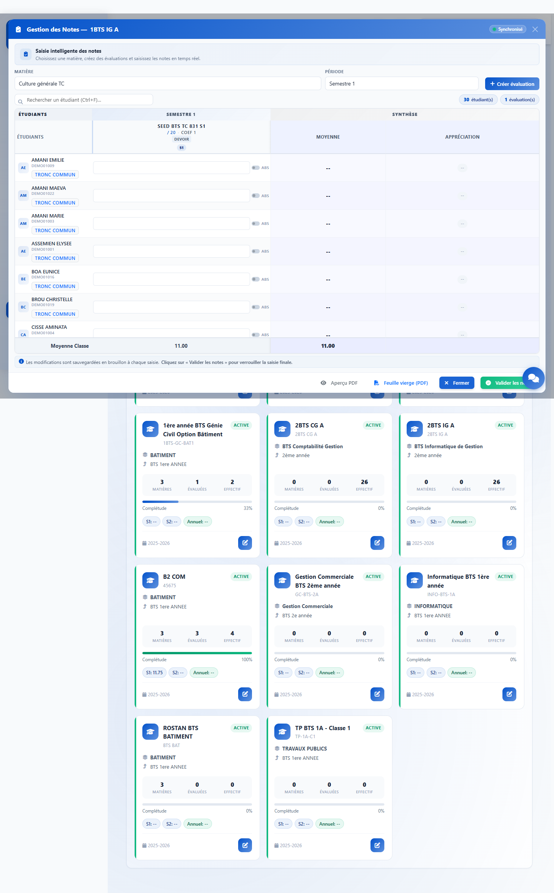

01 · Objectif
Le cas métier couvert.
Dans certaines écoles, les étudiants commencent en tronc commun, puis passent en spécialité. Il arrive ensuite qu’une note du semestre de tronc commun doive être saisie en retard.
1. Retrouver
KLASSCI retrouve les étudiants selon leur historique académique, pas seulement selon leur classe actuelle.
2. Saisir
La note peut être ajoutée dans la classe de tronc commun, sur le semestre où l’étudiant y était bien inscrit.
3. Verrouiller
La sauvegarde automatique garde un brouillon. La validation finale déclenche le verrouillage selon les droits.
À retenir : un étudiant déjà en spécialité peut apparaître dans sa classe de tronc commun pour le semestre concerné, sans être ajouté aux semestres où il n’appartenait plus à cette classe.
02 · Principe
KLASSCI lit le parcours de l’étudiant.
Le module Notes ne se limite pas à l’inscription active du jour. Il vérifie la période d’appartenance de l’étudiant à une classe pour afficher la bonne cohorte au bon semestre.
Semestre 1
Tronc commun
L’étudiant suit les enseignements communs. Ses notes S1 doivent rester attachées à cette classe.
Semestre 2
Spécialité
L’étudiant poursuit dans sa classe de spécialité. Les notes S2 se saisissent dans cette classe.
Plus tard
Note en retard
Pour corriger ou compléter le S1, on revient dans la classe de tronc commun et on sélectionne le semestre 1.
| Situation | Comportement attendu |
|---|
| L’étudiant était en tronc commun au semestre sélectionné. | Il apparaît dans la grille de notes de la classe TC avec l’indication « Tronc commun ». |
| L’étudiant n’était plus dans cette classe au semestre sélectionné. | Il n’est pas ajouté artificiellement à la grille de cette classe. |
| La note est enregistrée automatiquement. | Elle reste modifiable tant que le formulaire n’a pas été validé définitivement, selon les droits de l’utilisateur. |
03 · Étape 1
Ouvrir la classe de tronc commun.
Depuis le menu Notes, choisissez la classe de tronc commun concernée. La classe reste le point d’entrée naturel pour saisir les notes historiques du semestre commun.

Exemple : la classe « 1BTS IG A » est sélectionnée depuis la page de gestion des notes.
04 · Étape 2
Choisir la matière et le semestre.
Dans le modal de gestion des notes, sélectionnez la matière, puis le semestre de tronc commun. Pour une note du premier semestre, le choix attendu est « Semestre 1 ».
Bon réflexe
- Sélectionner la matière de tronc commun.
- Sélectionner le semestre où la classe était suivie.
- Attendre le chargement de la grille.
Ce que KLASSCI fait
Le système croise la classe, la matière, le semestre et l’historique de l’inscription pour afficher la bonne liste d’étudiants.

Le modal permet de filtrer la matière et le semestre avant la saisie.
05 · Étape 3
Saisir les notes du semestre 1.
La grille affiche les étudiants de la cohorte du semestre sélectionné. Les étudiants concernés par l’historique de tronc commun sont identifiés clairement dans la ligne de saisie.

La grille du semestre 1 affiche aussi les étudiants déjà orientés en spécialité lorsqu’ils appartenaient à la classe TC sur ce semestre.
06 · Sauvegarde
Brouillon automatique, validation finale.
La saisie dans la grille est sauvegardée automatiquement pour éviter les pertes. Cette sauvegarde ne doit pas être confondue avec la validation finale du formulaire.
1
Sauvegarde automatique
Après modification d’une note, KLASSCI enregistre un brouillon. L’utilisateur peut revenir corriger tant qu’il n’a pas finalisé.
2
Validation finale
Quand l’utilisateur valide le formulaire, la note devient soumise. Les règles de modification s’appliquent selon ses permissions.
| Action | Effet dans KLASSCI | Modification possible ensuite |
|---|
| Saisie d’une note | Enregistrement automatique en brouillon | Oui, tant que le formulaire n’est pas validé définitivement |
| Validation finale | Soumission officielle de la note | Selon les droits de modification de notes |
| Utilisateur sans droit de modification après soumission | La note est protégée après validation | Non, sauf profil autorisé |
Objectif : éviter qu’une simple sauvegarde automatique bloque l’utilisateur trop tôt, tout en conservant un verrouillage réel après validation.
07 · Contrôle semestre
Le filtrage reste strict.
Le fait de retrouver un étudiant dans son ancien tronc commun ne veut pas dire qu’il sera visible partout. KLASSCI l’affiche uniquement sur les semestres compatibles avec son parcours.

Exemple : sur un semestre qui ne correspond plus à l’appartenance TC, l’étudiant n’est pas injecté dans la grille.
08 · Procédure
Traiter une note de tronc commun en retard.
Cette procédure couvre le cas fréquent d’une note reçue après l’orientation de l’étudiant en spécialité.
1
Identifier la classe TC
Retrouver la classe de tronc commun suivie au semestre concerné.
2
Ouvrir Notes
Accéder à la page Notes, puis ouvrir la classe de tronc commun.
3
Choisir la matière
Sélectionner la matière concernée par la note en retard.
4
Choisir le semestre
Sélectionner le semestre où l’étudiant était bien dans cette classe.
5
Saisir la note
Entrer la note dans la grille, puis laisser la sauvegarde automatique se faire.
6
Valider
Relire la grille, puis soumettre définitivement quand les notes sont complètes.
09 · Questions fréquentes
Points de vigilance.
Pourquoi l’étudiant apparaît-il encore en TC ?
Parce que le semestre sélectionné correspond à sa période réelle en tronc commun.
Pourquoi ne le voit-on pas au semestre suivant ?
Parce que son parcours indique qu’il était déjà orienté en spécialité sur ce semestre.
La sauvegarde automatique valide-t-elle la note ?
Non. Elle protège la saisie en brouillon. La validation finale reste une action volontaire.
Qui peut modifier après validation ?
Uniquement les profils disposant du droit de modification des notes déjà soumises.
Bonne pratique : utiliser la validation finale seulement lorsque toutes les notes de la matière et du semestre ont été relues.
10 · Synthèse client
Ce que la fonctionnalité garantit.
Le module Notes de KLASSCI permet aux écoles de gérer les notes de tronc commun en retard sans perdre la cohérence du parcours académique.
Garantie 1
Les notes restent attachées à la bonne classe, à la bonne matière et au bon semestre.
Garantie 2
Les étudiants passés en spécialité peuvent être retrouvés dans leur ancien tronc commun lorsque le semestre le justifie.
Garantie 3
La sauvegarde automatique protège le travail sans verrouiller prématurément la saisie.
Garantie 4
La validation finale applique les droits de modification et sécurise les notes soumises.
Conclusion : KLASSCI couvre le cas des notes de tronc commun en retard tout en respectant l’historique réel de chaque étudiant.